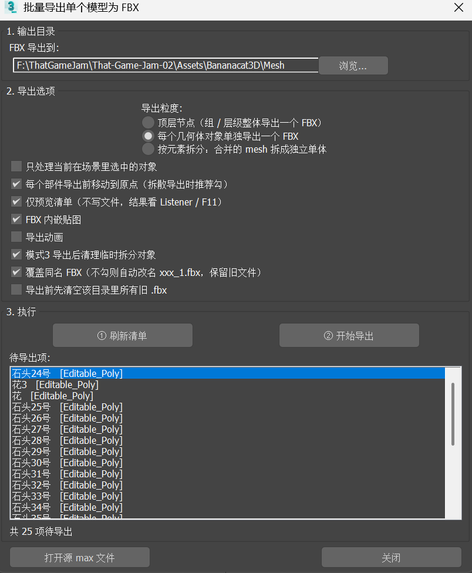

在爪与迹（Paw&Trail）营地场景的制作中，场景资产经常是「一个合并好的 mesh」——比如「营地场景1已uv1031.max」这样的文件，桌椅、帐篷、栅栏、火堆全都在同一个模型里。要把它们一个个拆出来、单独导出成 FBX 交给引擎或做后续整理，纯手动逐个拆分再导出，又慢又容易漏。
于是写了一个 MaxScript 批量导出插件，把「按元素拆散 → 逐个导出 → 清理临时节点」整条链路一键化，专门解决「合并 mesh 拆成独立单体」这一步。
2026年10月 · MaxScript
在爪与迹（Paw&Trail）营地场景的制作中，场景资产经常是「一个合并好的 mesh」——比如「营地场景1已uv1031.max」这样的文件，桌椅、帐篷、栅栏、火堆全都在同一个模型里。要把它们一个个拆出来、单独导出成 FBX 交给引擎或做后续整理，纯手动逐个拆分再导出，又慢又容易漏。
于是写了一个 MaxScript 批量导出插件，把「按元素拆散 → 逐个导出 → 清理临时节点」整条链路一键化，专门解决「合并 mesh 拆成独立单体」这一步。
这套插件是 2026 年 3 月那批 Max 插件研究（批量统计顶点面数、减面插件）的更细分衍生物——3 月那版偏「质检 / 减面」，这次偏「拆分导出」，专攻资产进引擎前的「拆分单体」环节。
和 3 月那版「只是批量统计 / 减面」不同，这个插件不是单单的批量导出，而是带上了按元素（连通块）拆散合并 mesh 的能力，属于资产管线里更靠前、更具体的「拆分」工序。
插件用单选按钮切三档导出粒度，覆盖不同拆分需求：
配套选项包括：只处理当前选中对象、导出前把部件移到原点、仅预览清单（不写文件）、FBX 内嵌贴图、导出动画、模式3 导出后清理临时拆分对象、覆盖同名 FBX、导出前先清空目录旧 .fbx 等。
polyop.getElementsUsingFace 收集所有连通块的面集合 → 用 polyop.detachFaces 把每个连通块拆成独立节点 → 逐个导出 → 最后删掉临时节点。原对象全程不动，不会破坏源场景。xxx__tmp.fbx，成功后再 rename 成正式文件名。这样中途失败（比如文件正被 Unity / UE 占用）也不会把旧 FBX 写坏。FBXExporterSetParam 统一设置动画、相机、灯光、内嵌贴图、UpAxis、Shape 等导出参数。safeName 把 \ / : * ? " < > | 等非法字符替换成下划线；重名自动加 _1、_2 后缀避让。_导出清单.txt，记录源文件、时间、成功 / 失败数与逐项「源名 → 输出路径」映射，方便回溯。插件是一个 3ds Max rollout 面板，顶部是输出目录与导出选项，底部是执行区。整体用法三步走：先点「① 刷新清单」确认待导出项对不对，再取消「仅预览」，最后点「② 开始导出」；日志同时打印在 MAXScript Listener（F11）里。

批量导出单个模型为 FBX · 2.0 版本界面截图
1.0 版本的两段操作演示：